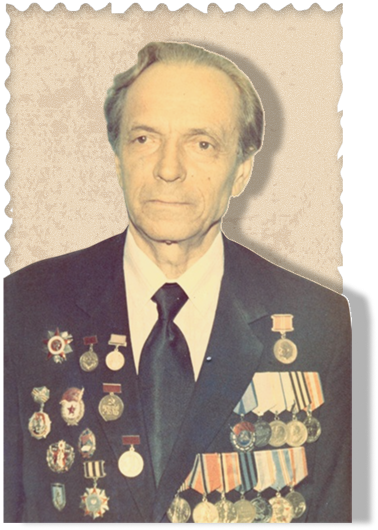
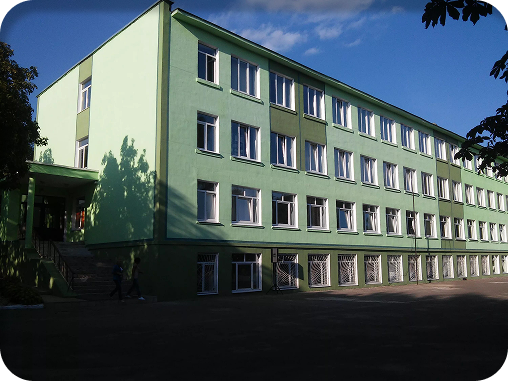

ИСТОРИЯ ОСНОВАНИЯ
(Боровлянская гимназия)

Основал музей
ветеран Великой Отечественной войны, заслуженный учитель БССР Иван Афанасьевич Будай.
В то время он работал учителем истории в Боровлянской средней школе.
БИОГРАФИЯ И.А.БУДАЯОСНОВНЫЕ РАЗДЕЛЫ ЭКСПОЗИЦИИ
ЦЕЛЬ ФУНКЦИОНИРОВАНИЯ МУЗЕЯ

НАПРАВЛЕНИЯ РАБОТЫ
В период работы И.А.Будая
В Боровлянской средней школе постоянно проводились тематические экскурсии в Музее Боевой Славы для учащихся и гостей школы. Гостями музея были ветераны Великой Отечественно войны, участники Минского подполья, писатели.
Сейчас
В Музее Боевой Славы имени Ивана Афанасьевича Будая также проводится экскурсионно-лекторская работа, реализуются акции “Дети - детям”, “Дети - представители других поколений”. Созданы объединения по интересам “Музейное дело” и “Юный экскурсовод”. Среди гостей музея - член Союза писателей Беларуси Константин Цыбульский.
А если жизнь на волоске?! А если вера угасает?!
Будет ли оно – будущее?...
Посмотрите вокруг! Будущее свершилось! И этим мы обязаны людям, которые мужественно, отважно, героически сражались не только за свою свободу, но и за право детей на жизнь. За наше с вами право счастливо жить в процветающей стране! Никто и никогда не сможет стереть из памяти молодого поколения, из памяти нашего народа и всего человечества подвиг белорусского солдата, подвиг белорусского человека. Нам есть с кого брать пример!